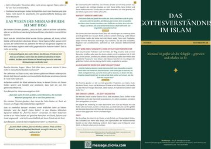

Der Koran: die letzte Offenbarung an die Menschheit
Deutsche Übersetzung des 6-seitigen Faltblatts des Islamic Information Center (Dubai); Koranverse in der offiziellen Übersetzung von Bubenheim und Elyas, Hadithe in inoffizieller Übersetzung.
Die letzte Offenbarung an die Menschheit
WAS IST DER KORAN?
DAS WORT GOTTES
Der Koran ist das wörtliche Wort Gottes, des Allmächtigen (auf Arabisch Allah), das dem Propheten Muhammad (Friede sei mit ihm) durch den Engel Gabriel offenbart wurde.
„(Dies ist) die Offenbarung des Buches von Allah, dem Allmächtigen und Allweisen.“
Koran 39:1
RECHTLEITUNG FÜR DIE MENSCHHEIT
Der Koran ist, kurz gesagt, „Der Monat Ramadan (ist es), in dem der Qur’an als Rechtleitung für die Menschen herabgesandt worden ist und als klare Beweise der Rechtleitung und der Unterscheidung. Wer also von euch während dieses Monats anwesend ist, der soll ihn fasten, wer jedoch krank ist oder sich auf einer Reise befindet, eine (gleiche) Anzahl von anderen Tagen (fasten). Allah will für euch Erleichterung; Er will für euch nicht Erschwernis, - damit ihr die Anzahl vollendet und Allah als den Größten preist, dafür, daß Er euch rechtgeleitet hat, auf daß ihr dankbar sein möget.“
Koran 2:185
Er gibt Orientierung, damit die Menschen zwischen Gut und Böse urteilen können; ohne ihn wäre der Mensch offenkundig verloren.
DIE LETZTE OFFENBARUNG
Der Koran ist die letzte von Gott, dem Allmächtigen, offenbarte Schrift. Er bestätigt das wenige an Wahrheit, das in Teilen der früheren Schriften noch erhalten ist, und widerlegt und berichtigt die Verfälschungen und Zusätze, die in die heutigen Fassungen dieser Schriften eingedrungen sind.
„O ihr, denen die Schrift gegeben wurde, glaubt an das, was Wir offenbart haben, das zu bestätigen, was euch (bereits) vorliegt, bevor Wir Gesichter auslöschen und nach hinten versetzen oder sie verfluchen, wie Wir die Sabbatleute verfluchten. Allahs Anordnung wird (stets) ausgeführt.“
Koran 4:47
WIE WURDE DER KORAN OFFENBART?
Der Koran wurde Muhammad (Friede sei mit ihm) offenbart und existiert ausschließlich in der Sprache, in der er offenbart und bewahrt wurde: Arabisch. Übersetzungen seiner Bedeutungen gibt es jedoch in vielen Sprachen.
Der Koran wurde nicht als vollständiges Buch in einer einzigen Offenbarung herabgesandt; vielmehr kam die Offenbarung schrittweise über einen Zeitraum von 23 Jahren herab.
Deshalb ist es wichtig, die Umstände zu kennen, unter denen die Verse offenbart wurden, um den Koran richtig zu verstehen; andernfalls könnten seine Lehren missverstanden werden.
WOHER WEISS ICH, DASS ER VON GOTT KOMMT?
BEWAHRUNG
Der Koran ist der einzige heilige religiöse Text, der seit Jahrhunderten im Umlauf ist und dennoch so rein geblieben ist wie am Tag seiner Offenbarung. Seit seiner Offenbarung vor mehr als 1400 Jahren wurde nichts hinzugefügt, gestrichen oder verändert.
„Gewiß, Wir sind es, die Wir die Ermahnung offenbart haben, und Wir werden wahrlich ihr Hüter sein.“
Koran 15:9
Der Koran wurde nicht nur schriftlich bewahrt, sondern auch in den Herzen von Männern, Frauen und Kindern. Bis heute haben Millionen Menschen auf der ganzen Welt den gesamten Koran von Anfang bis Ende auswendig gelernt.
WISSENSCHAFTLICHE WUNDER
Der Koran widerspricht der modernen Wissenschaft nicht, sondern stützt ihre Erkenntnisse. Einer der bemerkenswertesten Aspekte des Korans ist, dass er viele Verse enthält, die Naturphänomene aus verschiedenen Bereichen genau beschreiben, etwa aus der Embryologie, der Meteorologie, der Astronomie, der Geologie und der Ozeanografie. Wissenschaftler halten seine Beschreibungen für ein Buch aus dem 7. Jahrhundert für erstaunlich genau.
„Wir werden ihnen Unsere Zeichen am Gesichtskreis und in ihnen selbst zeigen, bis es ihnen klar wird, daß es die Wahrheit ist. Genügt es denn nicht, daß dein Herr über alles Zeuge ist?“
Koran 41:53
Tatsächlich wurden mehrere wissenschaftliche Wunder des Korans erst vor relativ kurzer Zeit durch den technischen Fortschritt entdeckt. Bedenke Folgendes:
- Der Koran beschreibt ausführlich die Entwicklung des menschlichen Embryos. Diese Einzelheiten waren der Wissenschaft bis vor kurzem unbekannt.
- Die moderne Wissenschaft hat Grenzschichten entdeckt, an denen sich zwei Meere begegnen, wobei jedes seine eigene Temperatur, Dichte und seinen eigenen Salzgehalt behält.
Diese Zeichen Gottes wurden im Koran schon vor mehr als 1400 Jahren klar erwähnt.
EINZIGARTIGKEIT
Seit seiner Offenbarung ist es niemandem gelungen, auch nur ein einziges Kapitel hervorzubringen, das dem Koran an Schönheit, Ausdruckskraft, Pracht, Weisheit, Prophezeiungen und anderen vollkommenen Eigenschaften gleichkäme.
Die Menschen, die den Propheten Muhammad (Friede sei mit ihm) ablehnten, scheiterten an dieser Herausforderung, obwohl sie die Sprache des Korans äußerst gewandt beherrschten. Diese Herausforderung ist bis heute unbeantwortet geblieben.
„Und wenn ihr im Zweifel über das seid, was Wir Unserem Diener offenbart haben, dann bringt doch eine Sura gleicher Art bei und ruft eure Zeugen außer Allah an, wenn ihr wahrhaftig seid!“
Koran 2:23
KEINE WIDERSPRÜCHE
Wenn Menschen schreiben, unterlaufen ihnen naturgemäß Fehler: Rechtschreib- oder Grammatikfehler, Widersprüche in den Worten oder beim Ziehen von Schlussfolgerungen und andere menschliche Irrtümer.
Der Koran enthält keinerlei Widerspruch – weder in den wissenschaftlichen Erklärungen über den Wasserkreislauf, die Embryologie, die Geologie oder die Kosmologie noch in den historischen Tatsachen und Ereignissen oder in den Prophezeiungen.
„Denken sie denn nicht sorgfältig über den Qur’an nach? Wenn er von jemand anderem wäre als von Allah, würden sie in ihm wahrlich viel Widerspruch finden.“
Koran 4:82
KÖNNTE MUHAMMAD IHN NICHT SELBST GESCHRIEBEN HABEN?
Der Prophet Muhammad (Friede sei mit ihm) ist in der Geschichte dafür bekannt, Analphabet gewesen zu sein: Er konnte weder lesen noch schreiben. Er war in keinem Fach ausgebildet, das die wissenschaftliche oder historische Genauigkeit oder die literarische Schönheit dieses großartigen Buches erklären könnte. Die Genauigkeit der im Koran erwähnten historischen Berichte über frühere Völker und Kulturen ist viel zu hoch, als dass ein Mensch ihn hätte schreiben können.
„Dieser Qur’an kann unmöglich ohne Allah ersonnen werden. Sondern (er ist) die Bestätigung dessen, was vor ihm war, und die ausführliche Darlegung des Buches, an dem es keinen Zweifel gibt, vom Herrn der Weltenbewohner.“
Koran 10:37
DER ZWECK DER OFFENBARUNG
AN DEN EINEN WAHREN GOTT GLAUBEN
„Euer Gott ist ein Einziger Gott. Es gibt keinen Gott außer Ihm, dem Allerbarmer, dem Barmherzigen.“
Koran 2:163
Das wichtigste Thema, das sich durch den ganzen Koran zieht, ist der Glaube an den einen wahren Gott. Gott teilt uns mit, dass Er keinen Partner, keinen Sohn und niemanden Seinesgleichen hat und dass niemand außer Ihm allein Anbetung verdient. Nichts ist mit Gott vergleichbar, und keines Seiner Geschöpfe ähnelt Ihm. Der Koran lehnt es auch ab, Gott menschliche Eigenschaften und Grenzen zuzuschreiben.
FALSCHE GÖTTER ABLEHNEN
„Und dient Allah und gesellt Ihm nichts bei. Und zu den Eltern sollt ihr gütig sein und zu den Verwandten, den Waisen, den Armen, dem verwandten Nachbarn, dem fremden Nachbarn, dem Gefährten zur Seite, dem Sohn des Weges und denen, die eure rechte Hand besitzt. Allah liebt nicht, wer eingebildet und prahlerisch ist,“
Koran 4:36
Da nur Allah Anbetung verdient, müssen die falschen Götter und Gottheiten, die neben Allah angebetet werden, abgelehnt werden. Der Koran lehnt auch die Vorstellung ab, irgendeiner Person oder Sache außer Allah göttliche Eigenschaften zuzuschreiben.
GESCHICHTEN DER VERGANGENHEIT ERZÄHLEN
Der Koran enthält viele Erzählungen mit nützlichen Lehren, darunter die wahren Geschichten früherer Propheten wie Adam, Noah, Abraham, Jesus und Moses (Friede sei mit ihnen allen). Über diese Geschichten sagt Allah:
„In ihren Geschichten ist wahrlich eine Lehre für diejenigen, die Verstand besitzen. Es ist keine Aussage, die ersonnen wird, sondern die Bestätigung dessen, was vor ihm war, und die ausführliche Darlegung aller Dinge und eine Rechtleitung und Barmherzigkeit für Leute, die glauben.“
Koran 12:111
UNS AN DEN TAG DES GERICHTS ERINNERN
Dieses edle Buch erinnert uns daran, dass jeder den Tod kosten und für all seine Taten und Worte gerichtet werden wird:
„Und Wir stellen die gerechten Waagen für den Tag der Auferstehung auf. So wird keiner Seele um irgend etwas Unrecht zugefügt; und wäre es auch das Gewicht eines Senfkorns, Wir bringen es bei. Und Wir genügen als Berechner.“
Koran 21:47
DIE GEWOLLTE LEBENSWEISE ERFÜLLEN
Vor allem lehrt der Koran, dass der Zweck des Lebens darin besteht, allein Gott anzubeten und nach der von Ihm vorgeschriebenen Lebensweise zu leben. Im Islam ist Anbetung ein umfassender Begriff, der alle Taten und Worte (ob verborgen oder sichtbar) einschließt, die Gott liebt und an denen Er Wohlgefallen hat. Wer also befolgt, was
Gott gebietet, der betet als Muslim Gott an und erfüllt seinen Lebenszweck. Hier einige Beispiele:
Das Gebet:
„O die ihr glaubt, verbeugt euch, werft euch nieder und dient eurem Herrn und tut das Gute, auf daß es euch wohl ergehen möge!“
Koran 22:77
Spenden geben:
„Daher fürchtet Allah, soweit ihr könnt. Und hört zu und gehorcht und gebt Gutes für euch selbst aus. Und diejenigen, die vor ihrer eigenen Habsucht bewahrt bleiben, das sind diejenigen, denen es wohl ergeht.“
Koran 64:16
Die Ehrlichkeit:
„Und verdeckt nicht das Wahre durch das Falsche, und verschweigt nicht die Wahrheit, wo ihr doch wißt!“
Koran 2:42
Die Sittsamkeit:
„Sag zu den gläubigen Männern, sie sollen ihre Blicke senken und ihre Scham hüten. Das ist lauterer für sie. Gewiß, Allah ist Kundig dessen, was sie machen. Und sag zu den gläubigen Frauen, sie sollen ihre Blicke senken und ihre Scham hüten, ihren Schmuck nicht offen zeigen, außer dem, was (sonst) sichtbar ist. Und sie sollen ihre Kopftücher auf den Brustschlitz ihres Gewandes schlagen und ihren Schmuck nicht offen zeigen, außer ihren Ehegatten, ihren Vätern, den Vätern ihrer Ehegatten, ihren Söhnen, den Söhnen ihrer Ehegatten, ihren Brüdern, den Söhnen ihrer Brüder und den Söhnen ihrer Schwestern, ihren Frauen, denen, die ihre rechte Hand besitzt, den männlichen Gefolgsleuten, die keinen (Geschlechts)trieb (mehr) haben, den Kindern, die auf die Blöße der Frauen (noch) nicht aufmerksam geworden sind. Und sie sollen ihre Füße nicht aneinanderschlagen, damit (nicht) bekannt wird, was sie von ihrem Schmuck verborgen tragen. Wendet euch alle reumütig Allah zu, ihr Gläubigen, auf daß es euch wohl ergehen möge!“
Koran 24:30-31
Die Dankbarkeit:
„Und Allah hat euch aus den Leibern eurer Mütter hervorgebracht, während ihr nichts wußtet. Und Er hat euch Gehör, Augenlicht und Herzen gegeben, auf daß ihr dankbar sein möget.“
Koran 16:78
Die Gerechtigkeit:
„O die ihr glaubt, seid Wahrer der Gerechtigkeit, Zeugen für Allah, auch wenn es gegen euch selbst oder die Eltern und nächsten Verwandten sein sollte! Ob er (der Betreffende) reich oder arm ist, so steht Allah beiden näher. Darum folgt nicht der Neigung, daß ihr nicht gerecht handelt! Wenn ihr (die Wahrheit) verdreht oder euch (davon) abwendet, gewiß, so ist Allah dessen, was ihr tut, Kundig.“
Koran 4:135
Die Geduld:
„Und sei standhaft; denn Allah läßt den Lohn der Gutes Tuenden nicht verlorengehen.“
Koran 11:115
Gutes tun:
„Allah hat denen, die glauben und rechtschaffene Werke tun, versprochen, daß es für sie Vergebung und großartigen Lohn geben wird.“
Koran 5:9
FAZIT
Zusammengefasst lehrt der Koran die Menschheit, wie sie den Einen und Wahren Gott anbeten soll, um so ihren wahren Lebenszweck zu erfüllen und Erfolg in dieser Welt wie im Jenseits zu erlangen.
„Gewiß, Wir haben für die Menschen das Buch mit der Wahrheit auf dich hinabgesandt. Wer sich nun rechtleiten läßt, der (tut das) zu seinem eigenen Vorteil; und wer in die Irre geht, der geht nur zu seinem eigenen Nachteil in die Irre. Und du bist nicht (als) Sachwalter über sie (eingesetzt).“
Koran 39:41
Koranverse: offizielle Übersetzung von Frank Bubenheim und Dr. Nadeem Elyas (quranenc.com).
* Inoffizielle Übersetzung, für dieses Faltblatt angefertigt (Aussprüche des Propheten und frei zitierte Stellen). Offizielle Hadith-Übersetzungen: hadeethenc.com
Deutsche Übersetzung des Faltblatts des Islamic Information Center (Dubai) · www.islamicic.com


Flyer zum Ausdrucken
 Einführung in den Islam: eine praktische und ausgewogene Lebensweise
Einführung in den Islam: eine praktische und ausgewogene LebensweiseDeutsch
 Der Prophet Muhammad: diesen Mann solltest du kennen!
Der Prophet Muhammad: diesen Mann solltest du kennen!Deutsch
 Jesus: ein Prophet Gottes
Jesus: ein Prophet GottesDeutsch

Das Gottesverständnis im IslamDeutsch
 Was ist der Sinn des Lebens?
Was ist der Sinn des Lebens?Deutsch
 Missverständnisse über den Islam
Missverständnisse über den IslamDeutsch
 Die Rechte der Frau im Islam
Die Rechte der Frau im IslamDeutsch
 Wissenschaftliche Wunder im Koran
Wissenschaftliche Wunder im KoranDeutsch
 Der Tod und das Jenseits
Der Tod und das JenseitsDeutsch